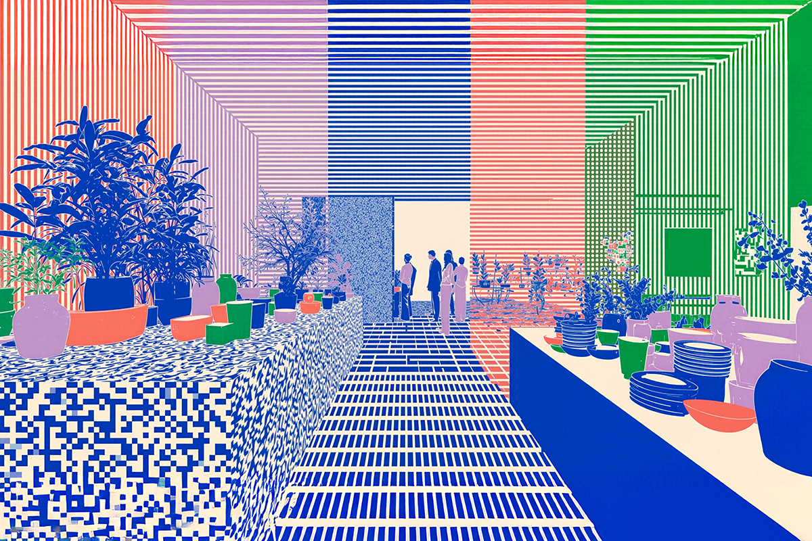
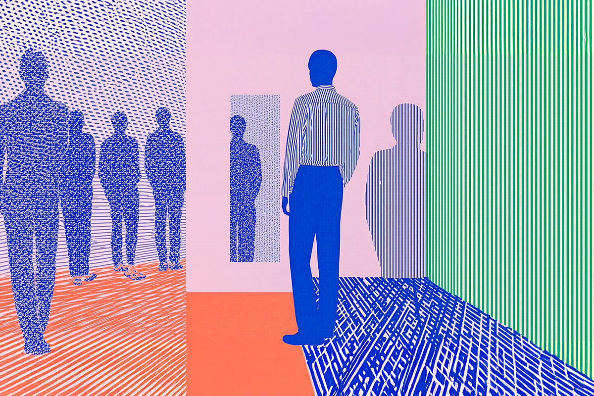
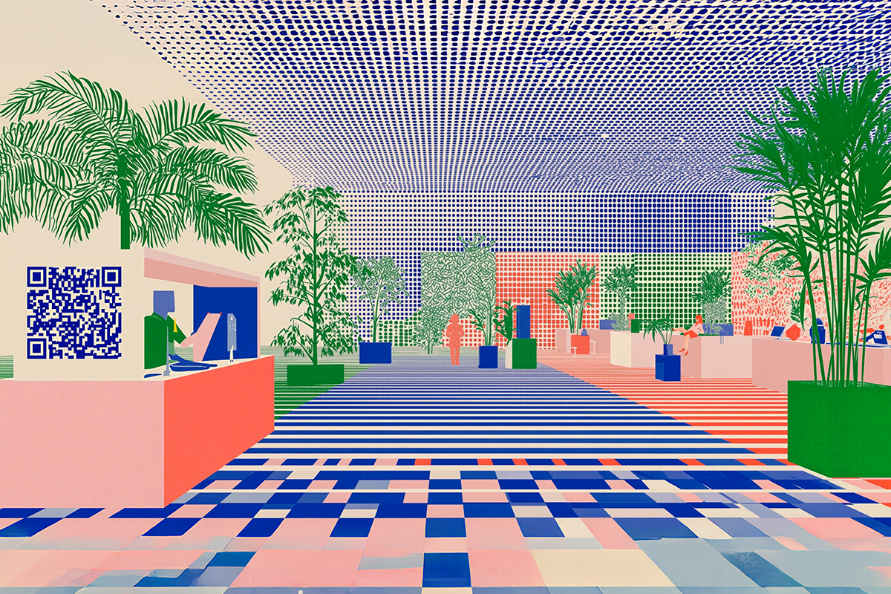
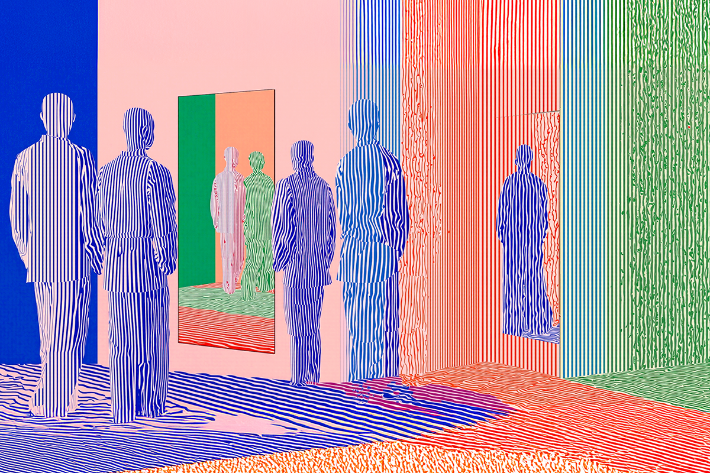

Cuando la tienda piensa por ti
El retail entra en una nueva era.
El retail entra en una nueva era.

¿Te has dado cuenta de que últimamente todo lo que veíamos en las series futuristas empieza a hacerse realidad? Tal vez aún no tengamos autos voladores, pero sí tiendas donde puedes entrar, tomar lo que necesitas y salir sin pasar por caja, o supermercados tan automatizados que parecen sacados de una película de ciencia ficción.

Asia lleva años marcando el ritmo, y poco a poco estas tendencias ya están empezando a llegar a Europa y América. Tiene sentido, porque a medida que las crisis mundiales afectan las compras del retail, las grandes tiendas deben buscar otras formas de modernizarse y generar más ingresos, por eso se han masificado los marketplaces o los servicios financieros asociados al retail. Según la consultora Bain & Company, estos servicios “extras” fueron responsables del 25% de los ingresos de esta industria en 2024.
Hoy, casi entrando en 2026, el foco se está moviendo hacia la eficiencia en la experiencia de compra: cómo lograr que los clientes compren más rápido, más fácil y, por qué no, también mejor. Aquí van las principales novedades.

Parece telepatía, pero que la caja de la tienda te sugiera cosas que normalmente compras, no es magia, es inteligencia artificial. Walmart fue pionero: desarrollaron una IA que te ayuda a planear tus reuniones sociales para ocasiones especiales, como el Super Bowl. La tecnología que usan te entrega sugerencias de aperitivos y recetas en base a tus compras los días previos al partido.
Y esto no funciona solo basándose en tus compras. En Holanda, un supermercado llamado Albert Heijn creó una tecnología donde puedes subir fotos de tu refrigerador para convertirlo en elaborados planes gourmet, algo así como tener un chef en tu bolsillo que piensa por ti.
Hace poco me pasó a mí. Fui a hacer compras a la farmacia y misteriosamente la pantalla en la caja me sugirió si no quería llevar productos extra. Lo chistoso fue que eran productos que compro normalmente. ¿Cómo? Con mi número de identificación entraron a mi sesión y vieron cuáles eran mis compras frecuentes. Un poco invasivo, pero muy inteligente.

La modernidad también está llevando las compras de vestuario a otro nivel. No hablo de avatars virtuales en los centros comerciales, pero sí de personalización que potencia la experiencia de compra. En Asia, hay probadores virtuales que te permiten probarte prendas sin tener que entrar y sacarte la ropa, o vitrinas personalizadas que te permiten ir cambiando lo que quieres ver en primer lugar.
La sostenibilidad también es un factor que se está tomando en cuenta. En tiempos donde la huella ambiental de la industria textil está siendo tan cuestionada, hay tiendas que están implementando códigos QR con la huella de carbono de cada prenda, o incluso puntajes para que puedas decidir qué comprar y qué no.

Todo indica que la experiencia de compra del futuro ya no se centrará solo en hacerlo más rápido y eficiente, también más inteligente. La experiencia de compra está dejando de ser un proceso pasivo: ahora es personalizada, guiada por los datos y enfocada en ayudarte a tomar mejores decisiones, tanto si te importa lo económico como lo ambiental.
Lo curioso es que, aunque estas innovaciones parecen futuristas, ya están aquí. Y si esto es lo que vemos en 2025, cuesta imaginar cómo compraremos en solo cinco o diez años más. Lo único seguro es que el retail ya no volverá a ser el de antes… y nosotros como compradores, tampoco.
 Tecnología
TecnologíaSi eres como yo y revisas TikTok e Instagram constantemente, te habrás dado cuenta de que estas redes son casi como un experimento social.
 Tecnología
TecnologíaHablamos mucho de inteligencia artificial. La tenemos integrada en nuestra vida, nos ayuda en nuestros trabajos y le preguntamos cosas de…
 Tecnología
TecnologíaDurante años hemos pensado en la inteligencia artificial como algo súper frío: servidores gigantes, computadores procesando datos y…